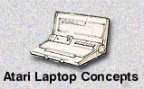
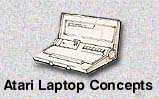

These never before seen artist renderings of proposed concept designs show
some of the amazing and mind boggling advanced thinking Atari was working
on in 1983. Some of these designs will in fact look quite familiar
as many of these ideas actually found their way into reality by other companies
several years later. Atari was on the brink of not only
setting the standard for new concepts but for also creating the idea of
fashionable, stylish and dare say it, sexy computer equipment that excelled
in both form and functionality.